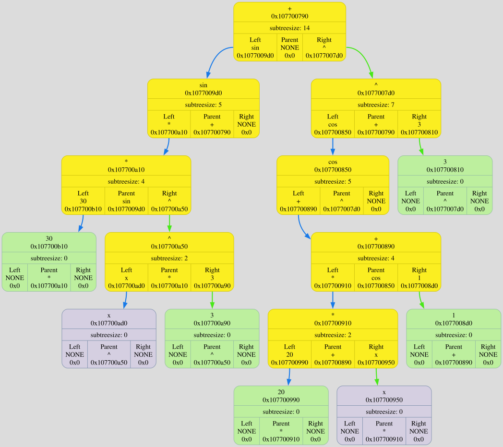
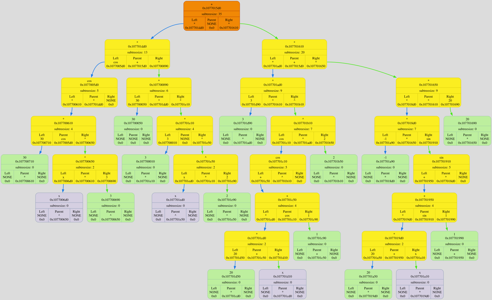

MEGA DUMP
Colors meanings:
variable node
⮑ left subtree edge
number node
⮑ right subtree edge
operation node
⮑ unknown what edge
pointed node
unknown what node
| Number |
Operation |
LaTexSymbol |
| 0 |
+ |
+ |
| 1 |
- |
- |
| 2 |
* |
\cdot |
| 3 |
/ |
frac |
| 4 |
sin |
\sin |
| 5 |
cos |
\cos |
| 6 |
sqrt |
\sqrt[] |
| 7 |
^ |
^ |
| 8 |
log |
log_ |
| 9 |
ln |
\ln |
| 10 |
exp |
e^ |
| 11 |
( |
( |
| 12 |
) |
) |
| 13 |
$ |
$ |
Binary Tree[0x16b49f1c0] born at "/Users/anatolij/Documents/GitHub/Differentiator/source/main.cpp": 22, name 'tree'
DUMP #1: function ExpressionReader was called from /Users/anatolij/Documents/GitHub/Differentiator/source/Differentiator_reader.cpp: 254

DUMP #2: function ExpressionDifferentiation was called from /Users/anatolij/Documents/GitHub/Differentiator/source/Differentiator_latex.cpp: 213

DUMP #3: function ExpressionDifferentiation was called from /Users/anatolij/Documents/GitHub/Differentiator/source/Differentiator_latex.cpp: 213